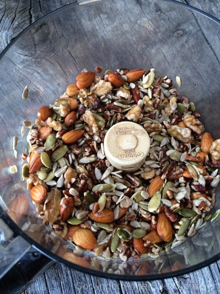
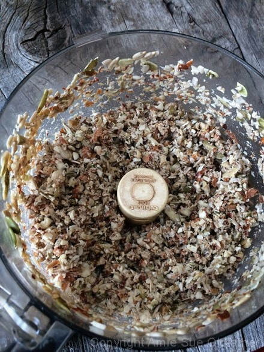
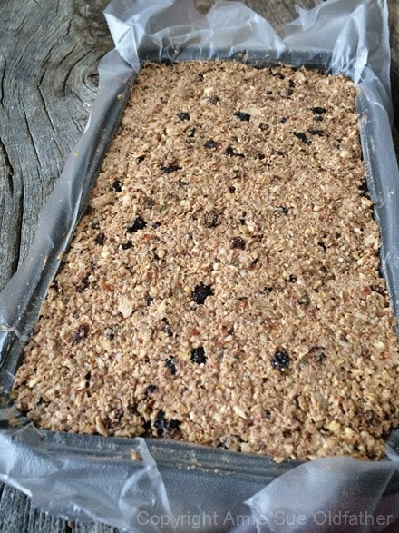

Long Haul Trail Mix Bar

~ raw, vegan, gluten-free ~
Yesterday, the Trail Mix Bar came about as I needed to clean out the pantry! I know the ingredient list may appear to be overwhelming, but trust me, it was easy-peasy to make!
Better yet, it tastes terrific and is packed with nutrients. I usually wrap each bar in plastic wrap and store in the fridge. My husband loves to grab one in the morning to take as a snack during the day.
They are also fantastic for hiking trips! I have a bunch of extra eyeglass cases, so I like to put a bar inside one and throw it in my purse. It protects the bar beautifully, and it’s the perfect shape.
I hope you enjoy this recipe. Many blessings, amie sue
Ingredients:
yields 8 x 6″ pan
Food processor:
- 1 cup raw almonds, soaked
- 1 cup raw pecans, soaked
- 3/4 cup raw walnuts, soaked
- 1 cup raw pumpkin seeds or sunflower seeds, soaked
- 1 Tbsp raw cacao powder
- 1 tsp ground Ceylon cinnamon
- 1/2 tsp Himalayan pink salt
Hand mix:
- 2 cups gluten-free, rolled oats, soaked
- 1 cup coconut flakes
- 1/2 cup raisins, rehydrated
- 1/2 cup cranberries, rehydrated
- 1 cup diced mission figs, rehydrated
- 1/2 cup raw agave or maple syrup
- 1 Tbsp cold-pressed coconut oil
Preparation:
- After soaking the nuts, seeds and oats, drain the soak water and rinse them.
- Rehydrate the dried fruits in enough warm water to cover them.
- Do this step while you are putting the rest of the recipe together.
- Rehydrating the dried fruits will soften them, helping them to break down and help as a binder.
- In the food processor, fitted with the “S blade, combine the almonds, pecans, walnuts, seeds, cacao, cinnamon, and salt. Process until the nuts reach a small crumble.
- Drain the soaking dried fruits and hand-squeeze the excess water from them before adding them to the other ingredients.
- In a large mixing bowl, combine the oats, coconut flakes, raisins, cranberries, figs, sweetener, and coconut oil.
- Transfer 1/2 of the batter to the food processor and process until broken down. Add back to the bowl and mix everything by hand.
- Line an 8 x 6″ pan with plastic wrap and press the batter into the pan. Place in the freezer for 30 minutes.
- Remove the pan from the freezer and flip over onto a cutting board. Cut into bars. The batter may appear slightly crumbly. Press the batter firmly, creating a bar shape.
- Place the bars on the mesh screen that comes with the dehydrator and dry at 145 degrees (F) for 1 hour, then reduce to 115 degrees (F) for an additional 6 hours or so. The length of time you dehydrate depends on how moist you want them.
- Store in a sealed container in the fridge. Personally, I like to wrap each bar in plastic wrap so we can grab and go!
The Institute of Culinary Ingredients™
- To learn more about maple syrup by clicking (here).
- What is raw cacao powder?
- Why do I specify Ceylon cinnamon? Click (here) to learn why.
- What is Himalayan pink salt, and does it matter? Click (here) to read more about it.
- Are oats gluten-free? Yes, read more about that (here).
- Are oats raw? Yes, they can be found. Click (here) to learn more.
- Do I need to soak and dehydrate oats? Not required but recommended. Click (here) to see why.
Culinary Explanations:
- Why do I start the dehydrator at 145 degrees (F)? Click (here) to learn the reason behind this.
- When working with fresh ingredients, it is essential to taste test as you build a recipe. Learn why (here).
- Don’t own a dehydrator? Learn how to use your oven (here). I do, however honestly believe that it is a worthwhile investment. Click (here) to learn what I use.



© AmieSue.com